- Purpose
- Audience
- Thanks
- Links
- Articles
- Forums
- Decision Time
- Drawing Up a Layout
- Testing Time
- Purpose
- Definitions
- Tournament Mode
- Device #1 - Levels
- Device #2 - Items
- Fundamentals
- Verticality
- Balance
- Flow
- Connectivity
- Scale
- Layout Types
- Single Atrium
- Duel Atrium
- Tri Atrium
- Examples
- HUB3AEROQ3
- CPM1A
- PRO-Q3DM6
- Purpose
- Weapons
- Shotgun
- Grenade Launcher
- Rocket Launcher
- Lightning Gun
- Railgun
- Plasma Gun
- BFG
- Ammo
- Health
- Armor/MH
- Placement
- Sets
- Other
- Powerups/Holdables
- Shards/+5h's
- Purpose
- Architecture
- Clipping
- Aesthetic
- Lighting
- Performance
- Trickjumps
- Creation
- Types
- In-Game Sounds
- World Dangers
- Lava/Slime
- Void
- Traps
- Spawnpoints
- Amount
- Location
- Vertical Transport
- Teleporters
- Jumppads
- Elevators
- Stairs
- Introduction
- Purpose
- Audience
- Thanks
- Getting Started
- Links
- Articles
- Forums
- Decision Time
- Drawing Up a Layout
- Testing Time
- Layout Design Theory
- Purpose
- Definitions
- Tournament Mode
- Basic: In its simplest form, players would "float" in an empty 2D space with absolutely no interferences or boundaries. Also, players would be completely balanced in that there would be only one single method (weapon) to "score" on their opponent by. One hit would kill, and there would be nothing to pick up. Players would reappear after being scored upon exactly as they were before.
- Complex: Quake 3 has added many things to complicate this process though, and in this case, complicating things is a good thing to do. Roaming around an empty space with no items would get awfully boring after about three seconds. There are two main "devices" which Quake3 utilizes to create a fun and strategic experience for Tourney Mode–3D Levels and Items.
- Device #1 - Levels
- Higher Ground - Players on higher ground (a higher ledge or floor) have several advantages over the lower player.
- Multiple Routes - Players can now make intelligent decisions as to which routes they will and will not take. This allow for much more strategy since it will make the players have to predict which route their opponent has taken at any given moment. It also allows for new gameplay opportunities such as ambushes and route cut-offs.
- Cover - Level architecture provides important coverage of players so they are not in the line-of-sight of their enemies all the time.
- Distinct Geographic Features - Levels provide players with useful information as to where they are in location to their opponent and to the rest of the level. This allows the player to create a mental map of the level in his head.
- Device #2 - Items
- Control - This is one of the most important functions/aspects of an item set. Players must now relocate from their starting position to the locations of different important items in order to gain an upper hand on his opponent. He may do so either by gaining a better weapon, gaining more life (in the form of health or armor), or a combination of the two. With this, the idea of control is introduced. Players must now find the best way to be able to gain all the items needed to gain the upper hand while still fighting off his opponent.
- Higher Ground - As stated in the Level category, weapons further the desire of players to attain a higher position than their adversaries. This is due in part to the increased line of sight, therefore making their weapons more effective. It is also due to the way splash damage weapons work. Since they explode on contact with any surface, it is naturally easier to hit someone from above since the radius of possibly damaging them is greatly increased with the induction of the floor.
- Ceiling Splash Damage - Splash damage weapons also introduce the possibility for ceiling splash damage. This is often a way for the mapper to give as much or more power to the lower level players. The mapper must make sure to have the upper floor ceilings low enough for this to be effective if he wishes to implement this strategy.
- Sound Cues - Due to Quake 3 having assigned sounds with the pickup of items, players can now predict where their opponents are based on the sounds of items they hear. This leads to all sorts of new strategies for players to take advantage of. They now have reason to bypass a certain item due to it possibly giving away their position.
- Fundamentals
- Verticality
- Balance
- Flow
- Connectivity
- Scale
- Layout Types
- Single Atrium
- Duel Atrium
- Tri Atrium
- Examples
- HUB3AEROQ3
- CPM1A
- PRO-Q3DM6
- Item Placement
- Purpose
- Weapons
- Shotgun (SG)
- Utility - The shotgun is a frequently understated weapon which used in the right hands can deal some heavy blows. It is most often useful to the down player because it is a step up from the MG and gives the player something to use until he gets a major weapon. The weapon's effectiveness is directly proportional to the type of map it is–tighter maps mean it is more powerful, larger, more open maps mean it is less effective. Plan accordingly.
- Placement - I've noticed that in most maps the SG is placed in a somewhat well frequented area, yet off to the side and not the center of the attention. Also, if you are wanting the down player to be able to grab it quick, make sure there are a few respawns close by.
- Amount - Usually 1. Sometimes 2 depending on the map.
- Ammo - To give down players even more of an edge, one may include an ammo pack right next to the weapon. Other than that, the SG doesn't usually need all that ammo around the level, if any at all because the players don't often use the SG enough to warrant the need. If you do put ammo in, 1 pack should be enough.
- Grenade Launcher (GL)
- Utility - Another overlooked weapon, the GL can also be useful to the down player. In close combat, a direct ‘nade to the face can cripple a player's opponent. The weapon may also be used in conjunction with other weapons to confuse the player into either stepping onto a grenade or walking into the line of fire of another weapon. Third, grenades can be very useful to block off different areas temporarily or to spam lower levels when you know the player is below. Overall, the GL adds a lot of depth to a level. It provides for more interesting fights (although it can slow down play sometimes), therefore it is almost always good to have a GL in.
- Placement - Two schools of thought on this: Place it high and encourage spamming, or place it low to discourage spamming. Both are actually valid techniques, but it really depends on the map and what the mapper is wanting to do with it. Just know the consequences of the placement ahead of time.
- Amount - Almost always one.
- Ammo - Really doesn't need any usually. However, if it's a rather large level or you are wanting to produce spamming, then include a pack of ammo.
- Rocket Launcher (RL)
- Utility - Ah, the mighty Rocket Launcher! With Promode's changes to its velocity and damage, it is now the major weapon to have. Its vast possibilities for use is one of the reasons why it is so popular. Players can use it in close battles to bounce their opponents around, mid-range battles by predicting where their opponent is going to be and usually hitting them with splash damage via walls or ceilings, and long range to protect certain doorways or spam various areas. It also, of course, allows the player much more vertical mobility with the rocket jump.
- Placement - Most often, the RL will end up being not only a highly used weapon, but also a spamming weapon. Because of this, it is usually good to place any RL's in the map in the more frequented areas. Place them in central locations making the player expose himself to get it. If you decide to have two RL's in your map (which is usually a good idea) you will most likely want to spread them apart in opposite atriums and likely on different floors.
- Amount - 1 or 2. It seems as if more and more maps are sporting 2 RL's as this allows for more rocket spamming and lets each player grab an RL, making it a somewhat standard weapon when dueling.
- Ammo - If you are wanting to encourage spamming, you'll want a few ammo packs in your map also. With 2 RL's, not as many packs are needed, but it might work to put an ammo pack next to one of the RL's (CPM1A does this). This makes the one RL more important to control than the other. Overall, 2 or 3 ammo packs is usually good for the RL.
- Lightning Gun (LG)
- Utility - Provides excellent short to mid-range offensive capabilities. Due to its fast (somewhat) hitscan nature, it is often used in combos or to finish off the opponent. The weapon is usually the most effective in smaller single or duel atrium style maps where long range battles don't come into play as much.
- Placement - From what I've noticed on maps, the weapon is usually placed in a "sub-area" or side room off the main area. This area is frequented every so often, although not continually. So why does this type of location usually work for the LG? I think its because the LG is more of a specialized weapon, and something that needs to be sought after to get. Its usually in a side area because this creates just enough danger (but not too much danger) to allow the players to grab the weapon, yet still make for interesting battles over it.
- Amount - Definitely only 1 is needed.
- Ammo - Usually, the mapper wants to make the ammo somewhat scarce in order to limit the weapon somewhat. Sometimes there is an ammo pack a hop, skip, and a step away to allow the player a little more long lasting flavor with the weapon. Only do this if you don't think the LG is powerful enough as is, and needs a bit of extra ammo to keep up with the other weapons. Otherwise, just place 2 or 3 ammo packs around the map in order to make the player have to move around to stay loaded.
- Railgun (RG)
- Utility - Covers the long-range combat aspect quite well. Also may be used in combos to finish off enemies. Acts as a great spawn-raper in Promode unfortunately (or fortunately depending on who you are) Can be over-powering in more open maps, so its inclusion is not always a good idea.
- Placement - By default, the RG is a very dangerous weapon. Therefore it needs to be in a somewhat dangerous location. Either place it in the open, making players have to expose themselves, or place it in a dangerous area like a small dead-end or 2-door area. For example, CPM1A's RG placement is perfect because it makes the player very susceptible to an attack from his opponent, and initially renders the weapon not as effective since it is on the lowest level. Careful when thinking about putting it at a top level, as this might encourage unneeded sniping.
- Amount - If you do decide to include the railgun, never include more than one.
- Ammo - Almost always none. Every once in awhile 1 pack which is dangerous to grab.
- Plasma Gun (PG)
- Utility - This weapon does decent to good in every area of combat (short to long range), yet it doesn't excel in any. This may be the reason why it is often left out–another weapon can do its job. At close range, the PG can eat away at a players health faster than any other weapon. At medium to long range, the weapon usually serves as more of a defensive weapon through the use of spam. It also is the anti-railgun as it can confuse the player with the RG when his opponent is shooting a bunch of projectiles at him.
- Placement - May usually be placed in a similar manner to the LG. Often it serves as more of a down player weapon, so it may also be placed in an easy to get spot, yet out of the way.
- Amount - No more than 1 if any.
- Ammo - Usually only 1 or 2 packs. If you are wanting more spamming with the PG, for example if the RG is becoming too dominant, give the player more ammo.
- BFG
- Ammo
- Health
- Armor/MH
- Placement
- Sets
- 2 YA (MH) - Often ends up in players armor running the map all the time. Usually more fast-paced but often results in an unbalanced map when one player is able to run the armors. An MH is useful in making for better games since it gives for the down player a chance to get back up.
- 1 RA, 1 YA (MH) - Similar to the 2 YA system. The map usually must support this set by being unbalanced in relation to the RA and YA. No third armor makes it hard for the down player to get back up if both the RA and YA have been taken. The addition of the MH makes play more interesting since it will often up RA vs. MH+YA.
- 1 RA, 2 YA (MH) - Better player will often end up with RA + YA by running armors. If the map can somehow allow for RA vs. 2 YA fights, it will be better. An MH will further mix up things, making the inevitable armor runs not as effective.
- 1 RA, 1 YA, 1 GA (MH) - Balances out the map more because the down player can grab the GA+YA against the up RA player, therefore making the RA weaker. With the MH thrown in, the down player can now attack the RA player and possibly gain the advantage.
- 1 YA, X GA (MH) - With 1 GA, this system becomes similar to the 1 RA, 1 YA system except the MH will become more important. With 2 GA's, it is similar to the 1 RA, 2 YA system, except once again armor isn't as important as health.
- Other
- Powerups/Holdables
- Shards/+5h's
- Level Design Considerations
- Purpose
- Architecture
- Clipping
- Aesthetic
- Lighting
- Performance
- Other Considerations
- Trickjumps
- Creation
- Types
- Circle Strafe Jump - Allows players to jump very far distances such as gaps. This can allow for players to take shortcuts or to surprise their opponents. CPM1A's jump from upper YA to opposite path is a good example of this jump in which players can exit quickly after grabbing the YA.
- Double Jump - Allows players to jump greater heights using any varied height surfaces like stairs. A good example would be on CPM3–going from the lava walkway up to the RL using a double jump. Also, since a double jump is due to the player jumping consecutive times in under 400ms, very low ceilings can allow the player to double jump. (e.g - q3dm14tmp)
- Ramp Jump - This jump is another addition of Promode. When players jump off of a ramp, if the ramp is sloping up they will gain vertical speed and if the ramp is sloping down they will gain horizontal speed. The steeper the angle the more effect it has on the movement (up to 45 degreees atleast) This presents a number of possibilities to the map.
- Double Ramp Jump - A combination of the double jump and the ramp jump, this trickjump can launch players in many circumstances. It was used extensively on CPM4 with ramped lights, allowing players to get to higher levels quickly.
- Tele Jump - This is essentially a double jump going through a teleporter. The jump allows the player to gain speed quickly after teleporting, or to get to different areas of the map quicker .For example, on CPM1A and CPM3 players can reach areas otherwise impossible to get from that location. In order to allow tele-jumps, make sure the teleporter destination is on the ground and not floating in midair. Also make sure there is nothing in the way for the player to bump their head on when jumping out.
- Framerate based jumps - DO NOT include framerate based jumps in your map. Most often, these come in the form of the 64-unit jump like the one in q3dm13 to the MH. Pmove_fixed has partly fixed this problem, but its still not a good idea.
- In-Game Sounds
- World Dangers
- Lava/Slime
- Void
- Traps
- Spawnpoints
- Amount
- Location
- Vertical Transport
- Teleporters
- Jumppads
- Flight Cover - Unless you're purposely wanting to make a jumppad dangerous to use, you'll want to make sure the jumppad has some kind of cover from enemy line-of-sight. Not necessarily the whole flight, but at least part of the flight. See CPM1A for an example.
- Height - Know when you should be using jumppads as opposed to some other form of movement. If the player just needs to go up a half a level or so, stairs are usually a better mode of transportation. If the player needs to go from the bottom level to the top level, a teleporter might serve better.
- Elevators
- Stairs
- Stair-Height - Long flights of stairs usually disrupt the gameplay of a map. Stairs work better for shorter height distances. Replace with a different mode of transport if need be.
- Step-Height - Q3's maps pioneered the 8-unit step height. Recent tourney maps seem to have gone with larger step heights such as 12 or 16 units. Once you do go with a certain step-height, try to maintain some consistency with that step-height throughout the level. Also, remember that higher steps make it easier for players to double-jump off of them.
- Trim - The mapper has the option of adding trim to the stairways of his map. In doing this, he can potentially create a number of new trickjumps in the map, so be aware of that.
This guide will attempt to clarify the seemingly mysterious methods, rules, and design techniques one should take into account when attempting to create a competitive level. Specifically, the guide will focus on the aspects of mapping for the Challenge ProMode mod for Quake III Arena. I know, you're probably wondering why you would need this guide when you've already got all those other great articles around. But this particular guide will be a sort of culmination of previous knowledge–taking in all past information and conglomerating it into one single comprehensive article. Hopefully this will make it much easier for the beginning mapper to create quality competitive maps without having to take ages to learn all the aspects of creating them. The guide is to be used as a sort of reference book. Although reading it one time through is okay, it is best to treat it as if it were a kind of manual. You don't usually read manuals straight through, but instead keep them handy for looking up various things at different times.
This guide is for anyone who has ever thought about, is presently considering, or is thinking about creating a serious playing tourney map for Quake3. While not a guarantee, the guide will set you in the right step forward to get your maps play time on actual servers. Even if you are just wanting to create a fun non-competitive tourney map, the guide will still be of use.
Before I get started I would just like to thank all of the guys over at the Promode Forums for putting up with all the testing of my maps and for actually showing me most of this stuff.
First of all, there are already some very informative articles out there which have a great deal of useful information in them. Much of what this guide says is simply shadowing what some of these articles have already said.
-TwoAM's Level Design article
-DM4 Discussion
-Lunaran's Design Theory
-Gameplay is King
-HowTo: Level Design
-Spawnpoint article
-Promode Forums
-CPMA.ORG.UK Forums
-XSReality
Before you even start your map, you should decide exactly what you are wanting to do with the map. This is A Good Thing(tm) to do for any map you do, not just tourney. So you need to decide if you really want to do a competitive tourney map, or if you'd rather just do a "fun" tourney map. What's the difference? Well, the biggest visible difference occurs in the layout/item placement area. But there are also hidden differences one can only see during the design/creation stage. This is because the mind set that you need for one type of map verses the other is completely different. So in doing a "serious" tourney map, the whole design process is going to be different from a "fun" tourney map. You will have to constantly test the map with players who know what they are doing, and you will also have to make every decision based on how it will affect the gameplay of your map. "Fun" tourney maps, on the other hand, usually will have a decent layout, but on average, will not have enough depth or complexity to quench the thirsts of the more serious players. These type of maps will also usually focus as much attention on the looks part of it as the gameplay part of the map.
So now that you have correctly chosen the path of the Enlightened (making a competitive tourney map of course!), you will need to design a layout for the map. This step is the single most important part to the map, so much care and thought is needed in the process of the design stage One thing to caution in designing your layout is careless randomness. Although starting out with a "kewl room" and "going with the flow" to create your level might seem like the right thing to do at the time, in the long run it will most likely cripple your map. This is because, unless you're an expert at this stuff, making rooms as you go results in a layout which usually doesn't work very well and lacks the depth and strategy needed in a tourney map. Instead, you should intelligently come up with a design either on paper or in your head. You don't need to necessarily come up with every little detail of the level, but at least get a rough layout of the map going. In the alpha and beta stages you will most likely end up making many small changes to the layout so you don't need to be worrying too much about the first few layout attempts
Here is an example of a rough sketch I did for my level wvwq3dm3.
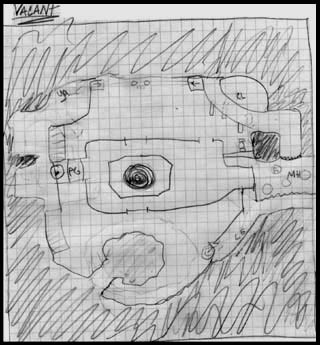
[See Pt. III of this guide for more details on designing your layout.]
This next part is also quite crucial to the design of your map. Once you get that killer layout drawn out, churn out a simple little alpha map for some players to get a hold of. In this first alpha map, you want to get all of that basic layout that you thought/drew out and apply it to 3D brush form. Don't worry about any texturing, detailing, or lighting in this first version. You just want to get the basic "skeleton" worked out. This includes one of the hardest parts for many mappers–getting the scale right. So the main purpose of these earlier map testing projects is for getting a feel of what works and what doesn't. To do this, you'll probably want to enlist the help of a clan or some players from one of the forums I have linked above. If the general consensus of the testers is that the map's layout doesn't have what it takes, suck it in and scrap the map. After all, that's why you're doing an alpha–to see if the layout works. Often, even if the layout isn't all that great to start with, enough changes to it in the early stages of design can improve the gameplay drastically.
A sample shot from the alpha of my level wvwq3dm6:
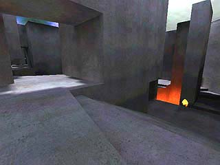
This section is going to attempt to go into detail on some of the design theory behind creating good layouts. I will first make some simple definitions in an attempt to give the mapper a clear view on what exactly it is that he is mapping for. I will then go into more detail, describing the different aspects of a good layout. However, this section will not try to give you a quick "easy-as-1-2-3" way to making great maps. Instead, when you understand the basic fundamentals, you will be able to apply what you know to an actual map. Just remember that experience is the best teacher though. You can know all the fundamentals in the world, but experience will still take you that extra step and make it that much easier to create your maps.
[also called: tourney, 1-on-1, DM, match play]
A type of play, specifically in the FPS genre of games, in which two and only two players oppose one another with the single goal of "scoring" more "points" than their opponent. They must do this by killing their opponent more often than they themselves are killed.
The function of the level is to create a continually interesting playing field for the players. Without any items at all, a level already presents several new strategies for the players. All of these strategies in and of themselves give the players sufficient reason to traverse the level, if only to gain the tactical edge.
(1) Higher weapon utility - weapons "work" better because your line of sight opens up more and because you may use the floor as a backstop for any splash damage weapons.
(2) More freedom of movement - Players at higher levels have more choices since they can simply drop down to any lower level they wish.
(3) Cover - Players may take cover more easily by using the floor/walkway that their feet are on as cover simply by moving back out of sight from the player below.
As you probably remember from the definitions section, this is one of the aspects that a level may introduce to increase the playability and strategy of the map. The intelligent mapper must take advantage of the 3D space allotted to him by creating multiple tiers/levels to further the gameplay of his map. With proper verticality, the gameplay will be greatly diversified and interesting.
So how do you create good verticality in your map? (as opposed to bad verticality) Well, besides the obvious point of adding more levels to it, there are also specific ways you can create interesting play. Here is one way:
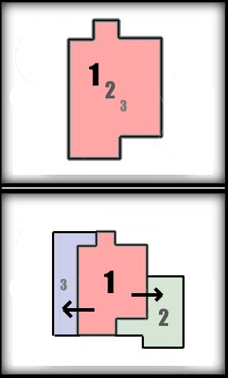
In the first design, the mapper has foolishly decided to put all three levels directly on top of each other. (Silly mapper!) Thus, the only possibly way of adding visible connections between the levels will have to be through the use of holes made in the floor. The second picture shows a better way to layout your tiers. In this method, the mapper offsets the different levels so players can have much more contact with players on other levels than their own.
[Lunaran's explanation]
A perfectly balanced map would ultimately be pretty boring to play. See the link above for a very good explanation of what too much balance can do for a map. On the other hand, a completely unbalanced map can also make for boring play in that the first player to gain control will keep control easily. The ideal is a map in which there is enough unbalance to make it interesting yet not so much as to make it overwhelmingly controllable. DM4 is one of the more unbalanced maps you will find, yet it is also one of the most popular precisely for that reason.
-Symmetry - Please, do not make your levels completely symmetric. This effectively halves the gameplay of the level since there is now only half of the level which is unique. The only reason q3tourney2 can get away with being symmetrical is because it has an asymmetric item placement. Even then, q3tourney2's gameplay is severely limited because of its symmetry.
[Lunaran's explanation]
Generally, a map needs to have a circular flow on the macro level. Not necessarily resembling a circle, but a flow in which the player doesn't have to turn around and do a 180 all the time but instead can just run around the map in loops. Flow is very closely related to the layout of a map, so you'll want to see that section for more info.
-Dead Ends - Generally, dead ends are a very, very bad thing. :) They abrupt the flow and slow down the gameplay. But every so often the mapper can in fact use a dead end to house an important item. DM4's MH deadend is probably the best example of this. The player has to risk being trapped in the deadend in order to gain an upper hand on his opponent by gaining the MH.
[Lunaran's explanation]
This is a word often used to describe a well-playing level. People often say "That level has good connectivity." The word actually describes how well players are allowed to flow throughout the map from one section to another. The more paths/openings a level has, the more connective it will probably be. It is always good to have a somewhat high connectivity because this gives the player options on where to go, resulting in increased strategy. Just be careful not to make too many passages from one area to another, otherwise it turns into Swiss Cheese and loses the effectiveness of the layout.
Achieving proper connectivity often can be a difficult thing to do for many mappers. Often maps suffer from what I call "room-hall-room" syndrome. This is where the player can easily tell one section of a map from another due to there being strict and distinct passages from one area to another, thus creating poor chokepoints and bad gameplay. Instead, the mapper should attempt to create a continuously flowing map where rooms flow into other rooms. Maybe an illustration will help:
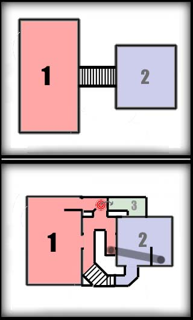
As you can see, the first pic is simply a room connected to another via a simple stairway. Not only does this create a very bad choke point, but it also creates bad connectivity. The second pic shows another possible way, which would provide much more connectivity. There are now 3 possible routes from the lower level to the upper level. One route via jumppad takes you to an even higher level (3), the second route uses a teleporter, and the third route use the stairs method.
This aspect of the layout is often one of the hardest to nail down for many mappers. One must strike a balance between too large/open and too small/tight. One thing that helps is to look at some other good maps and get a feel for the scale used in them. You could even use the -bsp2map function of bspc to create a pseudo test map to check out the maps scale and quantify it. For example, with my map wvwq3dm5, I de-compiled CPM1A since I was wanting my map to be similar to it in scale. I then measured the distances between different floors, measured the width of walkways, and measured the distance of various jumps. Also, another important thing which the mapper needs to get right is the "chunkiness" of the architecture. Paper thin walls don't do well for gameplay or for aesthetics.
Here are some specs to help you out (none of these are "official", just what I have observed):
-Walkways - CPM1,3 type = 128 units wide. 192 units is also common, and if you're doing major hallways/walkways you will need even larger.
-Distance between Levels/Floors - Average seems to be about 256 units.
-Atrium Size - 1024 units for smaller/tighter maps
-Wall Thickness - 64 units
Over the years, there have been a number of basic layout types that have worked. Just by looking at the major successful 1v1 maps you can already start to categorize them into various groups. Here are some of the most common layouts that have worked:
Note: These are just here for guidance. Don't think for a minute that you HAVE to follow these layouts. Feel free to experiment and find what is best.
[hub3aeroq3, q2dm1, q1dm4, cpm7]
This type of layout consists of only one main area with smaller sub-areas usually surrounding the main atrium. Since there is only one atrium, there's often four or more separate levels to the map. Flow usually ends up being somewhat circular on the outside of the main area with players inextricably pouring into the middle for the main fights. Play is usually very fast with mid-ranged hide-and-seek type play from multiple levels in the main atrium. On the "outside loop" the play usually results in quick up close and personal skirmishes. Item placement usually consists of the armors on opposite sides of the outer loop, and a major item such as Mega Health in the central atrium.
[cpm1a, cpm3, hub3tourney1 (cpm12), ik3dm2]
The seemingly undisputed champion of recent Quake 3 maps. This layout consists of two separate atriums (large rooms) which are connected "at the hip" There are usually at least three distinct tiers (levels) to each atrium with hallways/passages winding all about the two atriums going from tier to tier via stairways, jumppads, or teleporters. As far as item placement goes, you'll often find an RL and an armor of some kind in each atrium. This item placement works here because the pair of RL's and pair of armors correspond to the 2 players who are dueling in the map. Duel-Atrium style often results in there being a player in each atrium for half the time, and then the other half of the time will be brief medium distance fighting. It also can create "armor running" in which a player traverses from one atrium to the other to grab both armors and remain in control of the map. A duel-atrium map will usually result in a figure-8 style of flow, therefore keeping players on the go all the time.
[ospdm4 (mrcq3t6), pro-q3dm6]
This layout often leads to the most strategic and complex, albeit slower games. Although the gameplay can't really be compared to that of the duel-atrium style, one could still say its basically a duel-atrium map with a third room tacked on. This third atrium may be either larger or smaller than the other two. Since there is a bigger footprint with this style, there are often only two or three floors at any one point in the level. Players will now not see each other quite as often as in other styles of layouts, and when they do, it will more likely be at longer distances. Item placement can be similar to the duel-atrium style with an armor in the two equal sized atriums. The third atrium, depending on its size will usually serve as either the main fighting forum, or as a regrouping area for down players.
One of the best ways to develop a layout is to look at current map layouts that work. This section will specifically analyze three different maps, one from each of the categories above.
[single atrium]
This map's layout, originally developed by Preacher, is probably one of the best examples of the fast play a single-atrium map induces. The map has a total of 4 floors for players to traverse on. As you can see in the following illustration, the lowest section/floor is in the center of the map. It then gradually increases in height as the players make a complete circle around the center atrium. The 2 teleporters in the center bottom create good opportunity for the player to get to both the mid and top levels. This results in players being seen only sporadically in the central atrium at different ledges and also jumping down into the teleporters and vanishing from the wide open. The teleporter on the left hand side however, is the key one. The area surrounding the GA teleporter is often subject to a number of heated battles due to the fact that the teleporter takes you from the bottom of the map to the top very quickly. Not only that, but it also give the player quick access to the railgun up top. As far as item placement goes, the second pic shows how the red and yellow armors have been places separate at opposite ends of the outer loop. Also, the Megahealth's placement in the middle creates many interesting fights in which players can come from any number of areas and angles by simply dropping down. Lastly, the Green Armor area, with its important teleporter, functions as a regrouping area for down or newly respawned players.
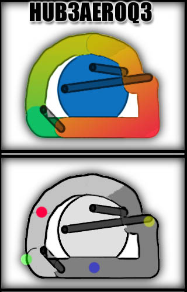
-Here is a key control point for the up player. The area in red represents where the player can be to have access to all of these areas. The blue lines represent top level routes and Lines Of Sight (LOS) which the players have immediate access to. The green lines represent drop down routes and LOS's which the player also has access to. Not only does the player have access to all of these, but he also can guard the important RG teleporter, and more importantly the MH area. One disadvantage of this area is that the player can't directly defend the RA area, therefore leaving his opponent open to grab the RA.
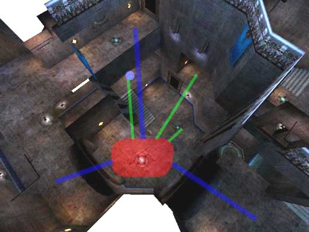
[duel atrium]
One of the most popular CPM maps ever, and my personal favorite, this map sports a nifty duel-atrium style which works very well. Three major floors make up the map (although you can't see that from the pic below). What you can see, however, is the general flow of the map. The two atriums are connected diagonally with the hallways wrapping around in between. The single set of reciprocal teleporters are very important to the map due to the fact that players can venture from the bottom to the top very quickly. This results in many great fights because the top level players who are in the hallway section can keep track of both teleporters at once, therefore maintaining control. But if the up player decides to get either Yellow Armor, he has to give up his position of control for a moment, therefore allowing the down player to regain control. There are also the 2 jumppads that are shown in the pic which allow for vertical mobility. These are not used as often, but may allow players to sneak up on their opponents or launch surprise attacks. In the second pic, you can see how the author has decided to separate the armors at opposite ends of the map, in separate atriums, and at separate levels. This makes it harder to run the armors for the up player, but instead makes the player have to work for it.

-This next pic shows one of the key control areas to the map. The red area is where the player will often be. Here, he will have access to the YA to the left, and the 2 25h's behind him. On the upper level, the player has 3 options to take. These are again represented by the blue lines. The green lines once again represent the LOS areas which the player may keep track of their opponents. With the railgun, this upper player is in one of the best positions due to the multiple routes and multiple LOS's he has access to. Not to mention the teleporter LOS. Probably the only big disadvantage to this position is the difficulty it is getting out of it. The player has to either turn around and go down the dangerous hallway with their opponent potentially waiting for them, or he has to jump into the wide open atrium to get to any of the other areas (blue & green lines). This leaves him open to any kind of attacks that his opponent might launch on him.
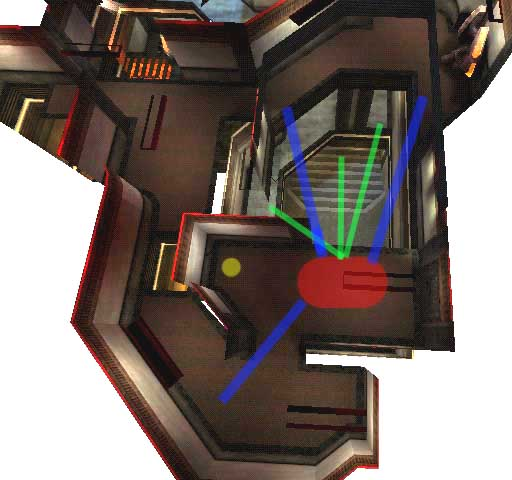
-This final pic shows another key control area for the player. Once again there are 3 good upper level escape routes/LOS's (blue lines) and 3 good lower level escape routes/LOS's (green lines). The player also has a LOS's to the full set of reciprocal teleporters, meaning he can fully control them, therefore keeping the player on the bottom level better. For items, the player has access to the mid-level YA and either 50h. But to do this, he must make the dangerous wide open jump across, opening himself up to attacks once again.
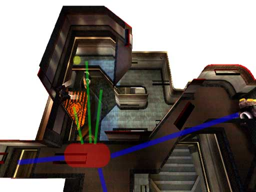
[Tri Atrium]
This map, being the favorite id map of many players for competitive play, is one of the few tri-atrium tourney maps that work. Even though the q3dm6 layout is very large and spread out, the map shrinks immensely when learned and due to the speeds which players can get to in the map. The pic below shows the relative sizes of the 3 atriums. As you can see, the middle one is the largest and the two outside ones are slightly smaller and elongated. The flow is very circular, taking the players from one atrium to the next in sequence. Most passages eventually lead to the center however, therefore creating the most action in this central atrium. With the addition of the bottom-to-top level jumppad in the center and also the MH, this makes for some very interesting action. Due to the extreme verticality in the center of the map, many long range hide-and=seek fights occur with the railgun/rocket launcher. In the side atriums however, fights usually will be more horizontal with long LOS's therefore once again making the railgun an important asset. This is why the railgun has been intelligently placed at the end of a somewhat dangerous pathway. Players must either travel along the pathway, or make a dangerous jump from the RL platform. In the second pic below (the gray one), you'll notice that the armors have been placed for maximum separation between each other. This is to prevent easy armor-running by the up player. The MH's position is much like that of HUB3AEROQ3 in that it has been placed in the bottom middle, making it a dangerous item to grab.
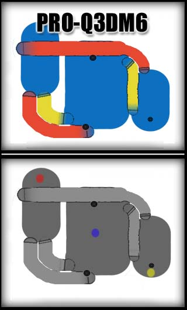
-Here is one of the primary control points of the map. When the player is anywhere in the red-zone, he has two top level routes/LOS's (blue lines), two mid-level routes/LOS's (green lines), and 2 bottom level routes/LOS's (yellow line). This allows the player to guard all entry points to the MH, therefore allowing him to grab the MH himself. It also allows the player to escape via any number of routes if in conflict. One disadvantage is the jumppad right ahead of the player. This can allow for his opponent to get right in his face very quickly, possibly allowing his opponent to regain control.
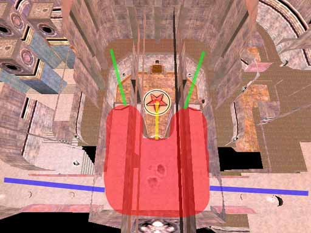
In the last section, it was mentioned that items are one of the devices used to complicate gameplay. This section will further go into how to place items in your level–when to put something in, when not to, where to put it, etc. There, of course, isn't any set rules for this kind of thing, but there's plenty of useful previous knowledge which may be applied to your current maps.
We'll start with the most important items of course! Without weapons, play would get boring extremely fast. With Quake 3, id decided to try and balance the weapons as much as possible. Why you ask? Because if any one weapon completely ruled everything else, players would end up only going for that weapon and once they got it, would be able to easily control the map. (see BFG) And on the opposite end of the spectrum, if any one weapon was weaker than everything else by a large margin (besides your spawn weapon), there would be no point in having it. What unfortunately ended up happening though was that the hitscan (mainly the railgun and machine gun) weapons began to rule play. This resulted in gameplay which relied on pure aiming skill as opposed to the skill of the player as a whole. Since then, Promode has fixed this problem with a number of weapon tweaks to the weapons. So now, in Promode the weapons are balanced a little bit better with the RL, LG, and RG being the "terrific three" of the lot.
So where does that leave the mapper? Well, with the weapon set being like it is, the mapper doesn't get many choices. Currently, pretty much 99% of the competitive tourney maps have the following weapons: SG, GL, RL, LG. The RG is also in most maps, but every once in awhile it is excluded. The PG is in every once in awhile it seems, depending on the map. BFG almost never (although that might change with the new CPM changes to it) So there is not really that much question as to WHAT weapons you should put in your map (with the exception of the PG and RG), now just a question of WHERE you should put them.

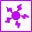
The BFG has no place in the serious tourney map, especially the vQ3 one. It reduces all strategy into a simple "Whoever has the BFG wins" type play. Recently, the Promode mod has made some big changes to the way the BFG works. With these changes, the BFG now acts as a slightly faster, slightly more powerful RL. While with these changes, a level might actually work now with the BFG, I would still have to say to leave it out. It's a bit late in the ballgame to be adding a "new" weapon to the weapon set, and I seriously doubt players would accept the map for tournaments or in leagues because of the BFG–no matter how well it works in the map.
I know, I've already gone over this in the weapons section. But here are just a few general rules to follow:
- Don't place ammo by its respective weapon. Instead, you should place the ammo a little ways away to make the players traverse the map more.
- 3 ammo packs for any single weapon should be the limit. More often than not, 1 or 2 ammo packs will be plenty.
- It is usually a good idea to group different types of ammo into groups of 2 or more. This focuses on one area instead of 2 to remember, which makes for both simpler gameplay and better reason to visit the one single area.
Not usually a huge issue in item placement, yet health placement still has some certain guidelines to follow:
- 150-250h is usually the range of health per level (not including +5h's) Larger levels require a bit more usually. Also, the amount greatly depends on whether you want players to have access to more health and less armor, or vice versa. For example, CPM1A gives the players a total of 225h which is quite a lot for such a small level. This shifts the focus over to the armors more though.
- If there is a Megahealth in the level, less health is needed.
- Put health into different types of groups to diversify gameplay. Usually, you'll want to limit it to just a few main areas in the level to group health in. Don't spread the health out too evenly, otherwise gameplay will dull since players will be picking up health every where they go. Place the larger groups of health in more dangerous and fought over areas, and place smaller amounts of health in "down" areas. Just don't make it a kamikaze run for the down player to heal up.
- 2x25h vs. 50h - With a 50h in there, players can deny their opponents health easier. With 2x25h, if the player has >75h, he can only take one of the 25h's, therefore leaving the other one for his opponent. Therefore, if in testing, the up player is denying the down player health too often by picking up the 50h's, change them to 25h's.
Armor is one of the most important items to control in a level, so much care is needed in adding armor to your level. The armor you choose and its placement in the level can dramatically affect your level's gameplay: such as the importance of different areas, the paths players will take, and the balance and controllability of the map.
A few guidelines regarding the placement of armors:
- Spread the armor out as much as possible. You don't want players to be able to run the armors too easily.
- The danger in grabbing an armor should match its respective armor. Meaning the RA should be more dangerous to get than the YA and the YA should be more dangerous to get than the GA (Green Armor). Note: "dangerous" doesn't necessarily include world dangers like lava or the void. The danger can also be in relation to the other player. For example, if an armor is out in the open on a bottom floor, the player must expose himself to possible attacks from a number of angles.
- There should be interesting architecture and sufficient verticality surrounding most armor locations. This is because the area of the armors will most likely be fought in the most, so the players need different angles and levels to attack from.
- One thing that has been successful in the past is to put an armor (specifically the RA) in an easily camp-able/defendable spot such as the RA+MH in Q1DM2. What this will do is give the down player a chance to control the armor even with limited weaponry due to the chokepoints going to the armor. If done right, this results in some very interesting fights for control of the major armor. Note that the rule above about interesting space should be more important than ever if you are to use this method.
- The GA often serves as an armor for the down player, so place it accordingly. Often the GA will be placed in a regrouping area out of the way.
- Treat the MH as a kind of armor. It usually has slightly higher precedence than the YA, but not quite as high as the RA.
There are quite a few combinations of armors one can have in a level. Here are a few of them (Taken from Pure Imaginary's post in this thread.):
These items (quad, enviro, regen, invis, haste, flight, medkit, and personal tele) absolutely have NO place in a competitive tourney map. Why you ask? Powerups don't belong in a level because they are all based on a certain amount of time that they are effective. Because of this, whenever a player has a powerup, his opponent simply can run and hide until the powerup is gone, therefore slowing up the game immensely. The medkit isn't good because its annoying to have your opponent use it right as you're about to kill him. The Personal Teleporter isn't good because it makes the game too gimmicky–you'd never know if your opponent is about to disappear.
These items are often overlooked and just randomly placed in areas, but they can actually serve some quite useful purposes.
- They provide important sound cues as to where the opponent is. Because of this, it is always good to put shards/+5h's in varying numbered groups. If the mapper does this, a player can know where his opponent is based on whether he hears 3 shards or 4 shards being picked up. Groups almost always range from 2-5 shards/+5h's.
- Shards/+5h's can also make certain areas more powerful than others. The classic example is q3tourney2 in which the 10 shards in the main room make that room much more valuable to control (as far as armor goes) than the other YA room.
- Important to the down player. A down player in CPM can pick up a single shard after he respawns and therefore be alive even after a RG hit.
This section will focus on the other aspects of level design besides gameplay. These aspects, however unrelated they may seem to be, will still be directly or indirectly related to the gameplay of the map.
.This topic is often misunderstood by many mappers. Many mappers love the kind of architecture that makes the map more "pretty" while the players want the kind of architecture that makes the map more interesting to play in. Often times, mappers have the false idea that players want completely empty rooms with "padded walls" when in fact the opposite is true. Now, when I say architecture, I'm talking about any brushwork that the player can interact with or move around which will result in more interesting play. Well placed architecture can provide players with a number of things such as cover, higher ground, lines-of-sight, and trickjumps. Here are some ideas to help you when doing architecture:
- Cover - A simple pole or obstruction in the middle of the room (such as in q3tourney2) can make an area a whole lot more fun to play in. Players hide and seek around the obstruction taking quick shots at one another. Castle-wall type structures (also could be bars in a window) also provide an interesting dynamic to the gameplay of a map. As players walk by, they are exposed every so often because they are not behind a structure.
- Higher Ground - Simple deviance in elevations can greatly change the way an area plays. A few stairs here and there to change the height of one area over another make for better fights in general. Just be careful not to make your floors too "bumpy", otherwise players will get annoyed at not being able to aim correctly.
- NOTE - One thing to watch out for when doing your level is low overhangs such as doorways. Its not usually good to be speeding through the level only to run your head into a doorway that's 16 units too low.
- Lines-of-Sight - Fully detailed levels can provide for more interesting play if they can give the players better angles in which to attack from. For example, an L-shaped hallway with completely flat walls will not be as fun as if the hallway's halls were riveted and the corners were rounded off a bit .If this were to happen, when players are at opposite ends of the L-shaped hallway, the architecture would allow them to fight better by shooting through the rivets or bouncing grenades off the angled walls. Here is a pic in case you didn't catch what I was saying:
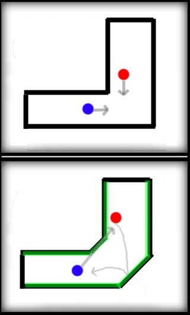
The top drawing shows the flat-walled cornered hallway. The only option the players have is move forward into sight in order to fight their opponents. The second drawing however, shows the more detailed walled, angled cornered hallway. The green represents the "riveting" in the wall which can be shot through at certain angles/heights. Players now have more angles to shoot their opponents from without giving away cover, and also may bounce grenades off the angled walls or use splash damage more effectively.
- Trickjumps - One of the best things that the mapper can unknowingly do when adding architecture is to give the players more options by trickjumping. More will be said about this later on in the guide, but for now, know that well placed architecture will inevitably spawn trickjumps. For example, any small changes in height such as stairs will automatically allow the players to double-jump off them (in CPM of course!). Any ramped brushes such as trims will also allow the players to reach areas they couldn't before hand. For this reason, adding ramped trims to the sides of stairways can often be a way to introduce more trickjumps.
Closely related to architecture, clipping is often overused in levels. Its really not all to hard to know when to clip. Here is the key thing to remember:
The clipping of a level should match the visual
This means that if it looks like a player should be able to get caught on a light fixture, don't clip it off! If it looks like a player can get up on top of a roof, don't block it off! So when do you use clip brushes?
- Clip bumpy floors to smooth them out. Players never like it when they can't aim due to being constantly jumbled around while running along.
- Use angled clips to smooth out certain details jutting out from walls. Just be careful not to use it too extensively.
Just a few notes about the aesthetics of a map. First of all, many mappers have a misconception that players care nothing for the aesthetics of a map when in fact they do. They like a good looking map just as much as the rest of us. But the crucial difference is that they care for the gameplay of that map a lot more than its looks. Also, when developing the aesthetic of the map, make sure to test it out in different configs to make sure it works. For example, a higher picmip setting on some textures could potentially wash out any distinguishing features–therefore making it harder for the player to navigate the level. Another thing that aesthetic is good for is to mark different areas of a map. Things such as weapons, items, different rooms, and floors can be marked with distinguishing textures to allow the players to navigate the level better.
So don't feel confined to doing the same old plain gothic aesthetic. Feel free to make your map good looking and well playing at the same time. Just be sure that the aesthetic never hurts the playability or performance of the map.
Lighting is closely related to the aesthetic of a map. The brightness of the lighting in a map has been discussed between mappers and players frequently in the past. Mappers argue that they want their maps to have moody atmospheres, and players just want to be able to see their opponents. Lighting however, really shouldn't be that big of an issue. In a standard competitive player config, pretty much any map will be bright enough, and if it isn't, you are doing something terribly wrong. So just develop the map to look good in lightmap mode, and every once in awhile, check it in a player's config to make sure it looks okay in vertex mode.
As long as the lighting has no affect on the gameplay, feel free to do whatever you want with it to make it look good in lightmap. Once players start complaining about dark areas in the map, you better get it lit.
Here is another touchy issue for the mapper. There is that magical ratio between performance and looks that every mapper must attain with his map. For the competitive tourney mapper, he must always be watching out for poor performance throughout his map. So how do you know where to stop adding detail and start optimizing? The best way is to have the map tested on a number of different systems in order to see if there are any slowdown areas. Many mappers rely on the r_speeds tool, but this doesn't take into account a number of other performance hogs such as fill rate and overdraw. For this reason, checking the framerate in conjunction with checking the r_speeds is the best method for you yourself to test the map.
Things to watch out for:
- shaders with multiple stages can greatly increase the amount of fill on the screen.
- texture use: check \imagelist and make sure your texel count isn't too high. What's too high? Compare with other maps.
- overdraw will result in extra tris and pixels being drawn. Hint/build properly.
- as a general guide, r_speeds usually need to stay below 7 or 8k
- in major areas that will see a lot of action (not that kind of action...), watch out for slow downs with both players in there spamming each other.
- speaking of spam (mmm... spam), if you decide to have the PG in the level, watch out for slow downs with that weapon
- often overlooked, if you are wanting the level to play well with bots, make sure to simplify the map with botclips as much as possible. Also, if you can, try to clusterportal the map. This will relieve the CPU a bit and will hopefully make the map play better with bots.
While it isn't necessarily required for a level to have trickjumps, they do add certain extra dimensions to the level. Trickjumps allow skilled players to be rewarded (in the form of an item or strategic advantage) taking jumps or risks they normally wouldn't. Trickjumps also add to the "cool factor" of playing a map and watching a demo of the map.
This is one main question about trickjumps that needs to be answered however. Do you, the mapper, knowingly add trickjumps to your map, or do you allow the players to find the jumps themselves? It seems as if everybody has a different opinion about this (as demonstrated in THIS thread). On the one hand, players like to discover trickjumps on their own. Obvious trickjumps that look like the mapper put them in are never as good as the player found trickjumps. But on the other hand, its extremely difficult for the mapper not to know about the trickjumps in his map. Unless of course, he's a bad Q3 player. :) So this still leaves us with the question of what to do about trickjumps. I personally think the best way to go is to make the map in such a way that there will be trickjumps that are somewhat obvious (although not forced) and then there will be trickjumps which will be brought up to the surface as the map gets played more. This is one of the many marks of a great tourney map. If the map has been built right (plenty of architecture, not "padded-walls"), trickjumps should show up.
Promode has introduced a number of new possibilities as far as trickjumps go. If you're not an avid player of Promode, yet still want to map for it (is this possible? :)) then you'll want to know the trickumps available. There are a number of articles written which explain the Promode physics and the new trickjumps associated with it. If you really want to get in depth about trickjumps, you'll want to read these:
Promode Movement: Art Meets Science (promode.org)
Promode Movement (cpma.org.uk)
Here are the basic trickjumps (for explanations on how to do them, see links above) you'll need to be aware of:
Adding target_speakers to the level to generate ambient sounds is not usually a good idea. It will only serve to hinder the gameplay, so its best to leave them out. Players need to concentrate on their opponents and the sounds associated with them picking up items–not on world noises.
In the right situation, the addition of world dangers can further the gameplay of a certain part of a map. World dangers include lava, slime, void, and traps. Often if the mapper decides to include a world danger, he should place it around an important item like MH or RA.
Probably the only world danger the mapper should use. Not every level should have this, and when it is used it should be used sparingly. Proper placement will result in making an area of a map more dangerous than others because the player has to risk falling in and hurting himself. Two consideration go along with this. The mapper has to decide how much the lava/slime will hurt the player, and he has to decide how hard to make it to get out of the danger. The dangerousness of the area will of course increase depending on how much hard it is to get out of the lava/slime.
Probably shouldn't be used. Players get annoyed when they are in the lead, are full of ammo and weapons, and stacked up on armor–and then fall into the void.
Unless you can conceive an ingenious trap which will further the gameplay of the map, its probably not a good idea to add any kind of traps. This usually will lend to slow gimmicky gameplay.
First of all, read over Hoony's spawnpoints article here. It explains everything quite well, and the inherant problems associated with the current spawnpoint system. Besides that article, there aren't really any concrete rules on placing spawnpoints. So I'm just going to describe some of the effects that may result from doing the spawnpoints a certain way.
No, there is not a magical number of spawnpoints you should put in your map. Just know that fewer spawnpoints (lets say under 8) will often result in more spawn-raping. But then again, more spawnpoints could make it more likely for the down player to spawn directly in front of his up opponent therefore giving him a free kill. Note that spawn-raping isn't always necessarily a bad thing. That is one of the things that made dm4 such a great level–the frag runs that could be had by the experienced player. So if it's a type of level where you want more spawn-raping to occur, than lower the spawnpoint count.
Once again, it comes down to what you are wanting in your level. If most of the level is open and railgun spawn-raping is a problem, it might be a good idea to put more spawns in untraveled, unexposed areas. Generally you will want to place most spawns in less traveled areas anyway. Also, make sure to keep them near walls and out of major pathways–otherwise you might get unwanted spawnfrags.One other thing you can do is place spawnpoints on major items such as armors or the MH. This works effectively in maps such as CPM1A and CPM3 because it gives the down player a better chance at survival if he happens to spawn directly on an armor/MH.
Teleporters are probably the best mode of vertical transport when going a somewhat good distance. In recent Q3 maps, it seems as if mappers have almost been afraid to use them, instead focusing more on jumppads. Teleporters are good however, because they keep the flow going better than jumppads. This is because jumppads create stop-and-go type play. Some of the best tourney levels have a number of teleporters, for example dm4 had 5, and aerowalk had 4.
Two problems you should be aware of appear when putting a bunch of teleporters in your map. First of all, players can get confused as to which teleporter takes them to which area, thus steepening the learning curve of the map. Not really all that big of a problem since you're not designing the maps for newbies, right? :) The second problem that arises with the addition of teleporters is the possibility of telefrags. This problem occurs most frequently when the map has reciprocal teleporters. So does that mean you shouldn't include 2-way teleporters? That really depends on the map. CPM3 contains a good implementation of a 2-way teleporter set in that the teleport destination is off set from that actual teleporter by a strafe jump. Some players think telefragging completely ruins a map, while others think it adds strategy to the area. So if, in testing the map, the players complain about telefragging, you might want to reconsider your teleporter system.
Jumppads are a relatively new addition to tourney maps which Q3 introduced. If you do decide to use jumppads in your level, you must be very cautious as to how you place them. First of all, as mentioned earlier, jumppads often create a stop-and-go type flow, which ends up slowing down the map. Secondly, jumppads can render the player useless and open to any rails that his opponent can get in. With those issues in mind, here are some general rules to abide by when placing jumppads:
These kind of got left in the dust after Q2 when Q3 added jumppads. One of the things that was holding them back from being used more extensively in Q3 maps was the borked up sound associated with them. Luckily, arQon has fixed this in his recent CPMA build. Now mappers can associate any sound he wishes with the elevators.
So what are elevators good for? They are somewhat multipurpose in that they can serve as vertical transporters for relatively small height changes or multilevel height changes. They also add strategy to the level for two reason. First, players can now hear where their opponent is going depending on what elevators their opponents take. Secondly, players can deny their opponent vertical transport rights by sitting on elevators or guarding elevators. Because of this, make sure that it doesn't hurt the gameplay if a player does do this. Just make sure you tweak the speed of the elevators to fit the gameplay. Nobody likes going up an elevator for what seems like an eternity.
Q2DM1's main atrium elevator is a great example of what a lift can add in terms of gameplay. Many an intense fight has occured on that elevator due to a down player running away from his opponent by trying to get to the top of the map. Another good example is the lift in the recent Q3 map FFDM2. This lift is the single vertical transporter in the room, making it a heated point of battle. A player from below may hear his opponent go up the lift and rocket-jump up to meet him with a shotgun blast to the face.
Ahh, the old standby–stairs. Stairs should probably be the most used vertical transport, especially for small height changes. Stairs keep everybody moving and don't hinder gameplay at all. They also can provide for more possibilities for player movement such as trickjumps and so on. Some guidelines: